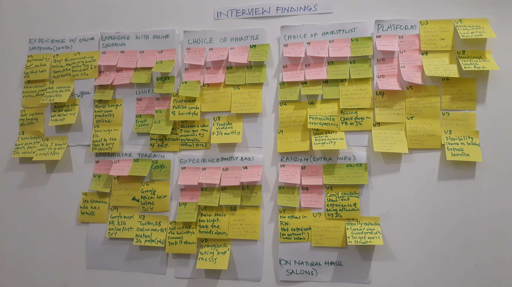

Designing An App for Scheduling Hair Styling Appointments
This project was an exploration to create an online experience around booking appointments with a hairstylist. The design was inspired by the question "What if an app allows me to book a hairstylists appointment around me?"
The product was intended to focuse on women in the African continent as there were other Apps with a similar functionality but are not available on the African market e.g Booksy and StyleSeat.
Interviews and Observations
The form of user research chosen was interviews because gathering qualitative data will be an opportunity to understand how online interactions influence decision women make with their hair and design the experience for the conceptual product I envision with this understanding. Since the product was targeted at African women, I reached out to students in my school (a panAfrican institution). I reached out to atleast 2 people from each region on the African continent.9 out of 11 people I reached out to agreed to an interview. The interview was conducted with their consent and an understanding of the goal of the interview i.e the purpose for collecting information from them.
The research question:
"How does online interaction currently influence decisions women make with their hair?"
The interview questions and notes can be found here.
To complement the interviews, I conducted secondary research to better understand internet consumers in Africa. Major findings from the secondary research can be found here.
From the information gathered from the interview and secondary research, user groups were identified and personas created for each user group. The personas are:
- The Googlers(Quick to search online for their needs):
They are very trusting of the internet and online reviews. Heavily influenced by e-culture in their decision-making. Love convenience. Have made purchases online. Trust-level: High.
- The E-skeptics(Very skeptical of reviews they see online):
They have made a few online purchases and will consider making more. Moderately influenced by e-culture and Ads. Sees Ads online and goes offline to purchase. Trust-level: Moderate.
- The Unwilling(Would rather make the decision physically):
They have never made an online purchase and highly doubts will consider making one. Values quality or certainty over convenience. Trust-level: Low.
Findings
In order to identify themes in the research, I did a card sorting of the interview participants responses.
From the, card sort, the following were recurring themes from th interview: